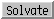

Solvate 
Solvate adds solvent around molecule models using
AmberTools.
Thanks to Wei Zhang (The University of Texas Health Science Center at Houston)
for implementing this tool. See also:
Add Ions,
Write Prmtop
There are several ways to start
Solvate, a tool in the Structure Editing and Amber
categories. It is also implemented as the command
solvate.
The model of interest should be chosen from the list.
Multiple models can be chosen, but they will be considered
individually rather than as a combined system.
Solvent addition requires explicit hydrogens.
If the molecule model does not include hydrogens,
a dialog for running AddH
beforehand will appear.
Solvate method options:
- Box - rectangular box with edges no closer than
Box size (Å) to any atom in the solute
- Cap - spherical cap with the specified
Cap center and Cap Radius (Å).
The center can be:
- a residue identified by a number which is the residue ID
- an atom identified by a string like ddd.xxx, where
ddd is the residue ID and xxx is the name of the atom
- Oct - truncated octahedron with edges no closer than
Oct size (Å) to any atom in the solute
- Shell - a layer of solvent extending Shell extent (Å)
from the solute. The shell will be irregular in shape since it
reflects the contours of the solute.
The Solvent Model can be any of the following:
- CHCL3BOX - chloroform
- MEOHBOX - methanol
- NMABOX - N-methylacetamide
- POL3BOX - POL3 water model
- SPCBOX - SPC/E water model
- SPCFWBOX - SPC/Fw water model
- QSPCFWBOX - qSPC/Fw water model
- TIP3PBOX - TIP3P water model
- TIP3PFBOX - TIP3P/F water model
- TIP4PBOX - TIP4P water model
- TIP4PEWBOX - TIP4P/Ew water model
One can Remove existing ions/solvent (recommended) before
solvating the system. The affected atoms are those
automatically
classified by Chimera as ions and solvent.
Partial charges corresponding to the chosen solvent model will be assigned
as the attribute
named charge to atoms in the existing (if not removed)
and newly added solvent residues.
OK initiates adding solvent and dismisses the panel,
while Apply adds solvent without dismissing the panel.
Addition may take several seconds; progress is reported in the
status line.
Close dismisses the panel without adding any solvent.
Help brings up this manual page in a browser window.
See the
AmberTools
documentation for further details.
UCSF Computer Graphics Laboratory / June 2009